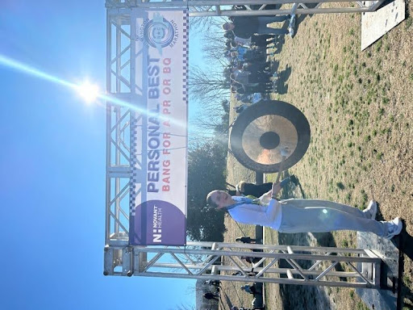

I went to high school in a small town in East Tennessee called Oak Ridge. My brother also went to high school here, and so did my mom and dad, and my grandfather, and my aunts and uncles. What I am getting at here is I felt an overwhelming sense of belonging growing up. When I finally made it to high school after the torment of middle school, I continued to have classes with the same cohort of classmates that I had always been around. I also played soccer beginning roughly at the time I could pick up my feet quickly enough to run and kick a ball without falling over. At this point in my life, my focus revolved around keeping my grades up, performing well in a sport that was second nature, scoring well on standardized tests, and branching out of my comfort zone by getting into a school a good distance away from the place I had lived my entire life.
Teaching What I've Learned
Coming into my freshman year of college, I was ready to take on the South Carolina Honors College and living with all of my peers who were just as accomplished and ambitious as I am. However, I was met with raging imposter syndrome and a harsh realization that my study habits in high school were not going to cut it in college. I had trouble focusing in classes and making time to complete assignments with social obligations and enjoying my newfound freedom. Unfortunately, the lack of academic validation took its toll on my well-being. I stopped taking care of myself; I was skating by -- putting bare minimum effort into my nutrition, exercise, and sleep habits. This was detrimental to my motivation to get involved outside of classes. I left South Carolina at the end of the school year defeated and unsure I wanted to return.
Over that summer, I worked two jobs, got into running, and began speaking openly about how I felt during the school year. Seems like a quick turnaround, and it was. I realized my trap was situational and in my head; I needed to create my home at USC. Maintaining my own well-being is the foundation to success in all realms of my life and has allowed space for providing support to others struggling on the same path I made my way out of during my undergraduate experience.
Coming into sophomore year, I was unsure how to tackle the “getting involved” part of college within the field of psychology. I decided to develop other skills, and step number one was to learn how to balance full-time school with a part-time job. I started working at Dick’s Sporting Goods in October of 2022. I was already into running, so I jumped at the opportunity to work in the footwear department where I could learn more about different types of shoes and how to help other runners and athletes. Through working this job, I have gained insight into teamwork, reliability, and prioritization. Adding these skills to my repertoire gave me a sense of well-roundedness and balance that I now carry with me through all of my activities.
As I began taking more psychology classes, I was introduced to frameworks of health I had notions of but lacked the vocabulary to understand the concepts in the scope of my own life. I had the amazing opportunity to study abroad in the spring of my junior year. I attended Aarhus University in Aarhus, Denmark, a premier research university integrating scholars from all over the world who come to study and teach. One of the most impactful classes on my transcript is Applied Gerontology. This class introduced me to the Biopsychosocial Model of Healthy Aging. We discussed how the signs of healthy aging are not solely based in biological factors but are dependent on community and emotional well-being.
I continue to apply the foundations of well-being this model conveys to determine which areas of my life support my career ambitions and which ones impede them. This model demonstrates how a well-rounded life would allow for better coping strategies as I continued to pack more involvement on and off campus into my schedule, enabling me to take full advantage of the opportunities for academic, professional, and personal growth offered at USC and beyond. Well-roundedness to me means focusing positive energy and effort towards all aspects of my life. Running has not only increased my physical endurance but also allowed me to make friends with similar interests and goals. Even further, I am now able to appropriately prioritize important habits and maintain discipline even when waves of motivation come and go.
Look at me go!
Similarly, in ENGL282 Fiction and Mental Health, we talked about Maslow’s Hierarchy of Needs. This recognizable pyramid of human needs was also eye-opening to me. I related back to my poor food and exercise habits of freshman year and determined I was unable to reach my academic potential when I was not reaching my basic needs.
When I began running, and eating like a runner, I was able to perform better at my job and push myself academically, socially, and emotionally. I developed deep connections with family, friends, and peers. I also gained a perspective on struggling that is deeper than the superficial, tangible proof. This empathy has allowed me to not only show myself grace but also inspired me to use my experience to help others.
If you had asked me freshman year if I would ever hold a role that put me in the position to tell first-semester freshmen how to make their transition to college as fulfilling as possible, I would have laughed in your face. However, I would have been wrong. I think my journey to better understanding how to take care of and apply myself in an academic setting has given me the perspective and grace needed to be a University 101 Peer Leader. The vulnerability required of me in this role is scary even now that I have done it three times, but it has been worth the discomfort to know my lows are helping others. I have learned just as much as I have taught. From bettering my time-management through added one-on-one meetings with students and helping grade assignments to getting over my fear of public speaking during class discussions, being a Peer Leader has been invaluable to my development as a confident and driven student. I took EDLP520 Teacher as the Manager and connected with other first-time Peer Leaders. The overwhelming sense of community and support continues to help me fulfil my personal hierarchy, including social, psychological, and biological, of needs.
Through my Peer Leadership experience, I have gained in-class experience in facilitation and preparation of class materials. As my career goal is to become a research psychologist, I will have the opportunity to teach at the college level. The Research Pathway of Graduation with Leadership Distinction emphasizes the connection between in-classroom learning and outside experiences. As I continue toward my professional goals, in-classroom learning will take a different shape as I transition from student to instructor. I believe my journey finding my academic and personal strengths have pointed me towards sharing my knowledge with future generations of students and academics. It is through the frameworks of well-being I am able to paint a future for myself reaching the point of self-actualization, built on years of hard work maintaining myself, my family and friend relationships, and continuing to push towards my goals.
Artifacts
This is my final project from Applied Gerontology where I used the Biopsychosocial Model in a hypothetical case study on aging with Down syndrome.
This is the final reflection I wrote in the form of a letter to a future Peer Leader for EDLP520. It discusses my time as a Peer Leader and what I learned.
This is the syllabus for the U101 class I had this past Fall that shows all the lessons I helped facilitate and the assignments I helped grade and give feedback on.